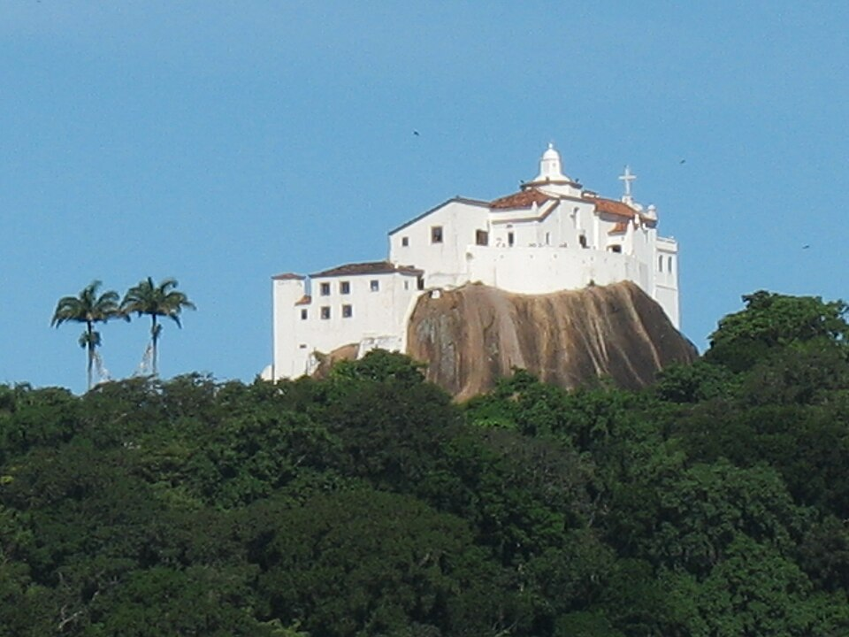
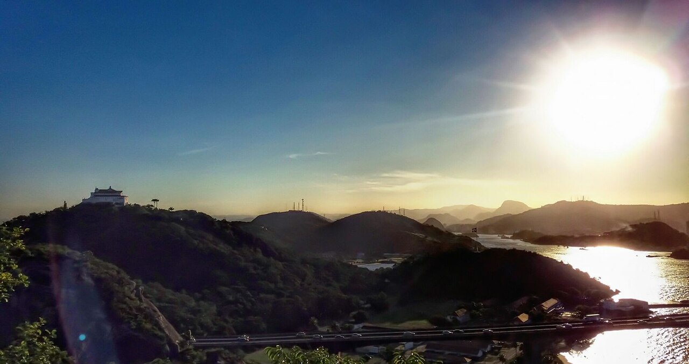

Desafio das Imagens
Vila Velha - ES

Convento da Penha visto do Morro do Moreno, um dos cartões-postais de Vila Velha.

Créditos das imagens
"
Convento da Penha - Vila Velha
" por MarcoXavier2005,
CC BY-SA 3.0
, via Wikimedia Commons.
"
Convento da Penha avistado do Morro do Moreno
" por Sanada92,
CC BY-SA 4.0
, via Wikimedia Commons.
"
Vista panorâmica do Morro do Moreno
" por Sanada92,
CC BY-SA 4.0
, via Wikimedia Commons.